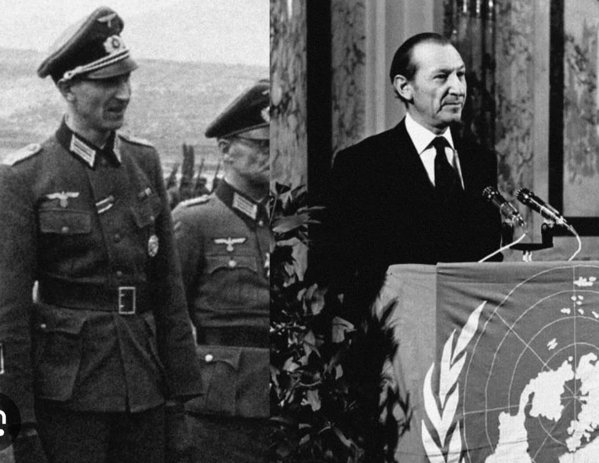
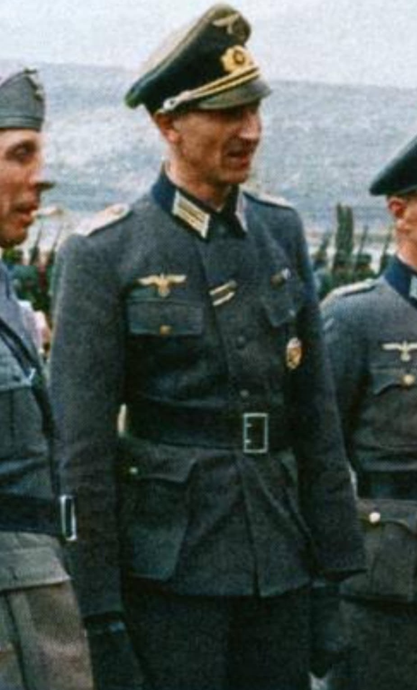
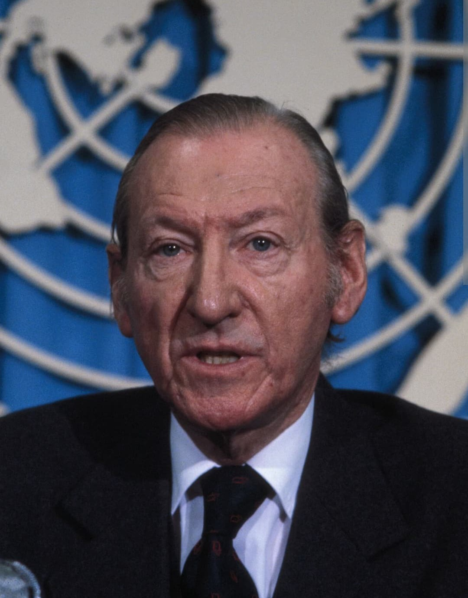
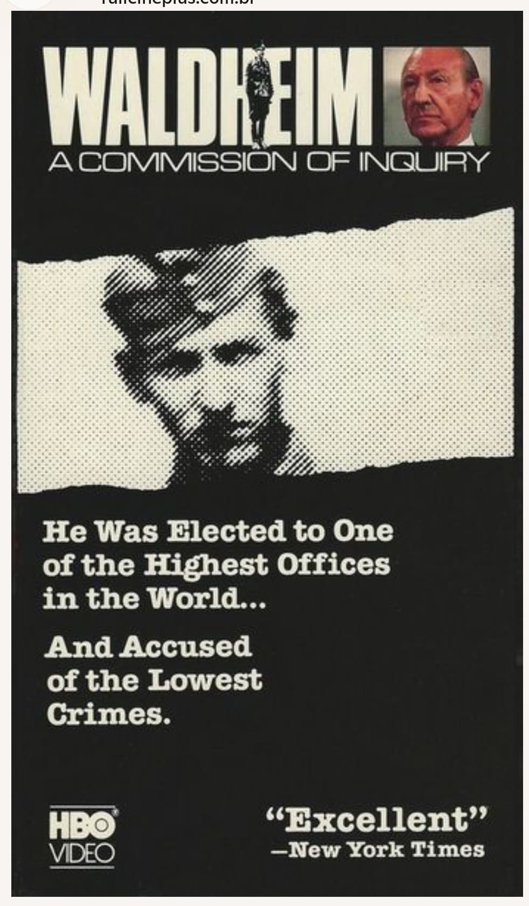
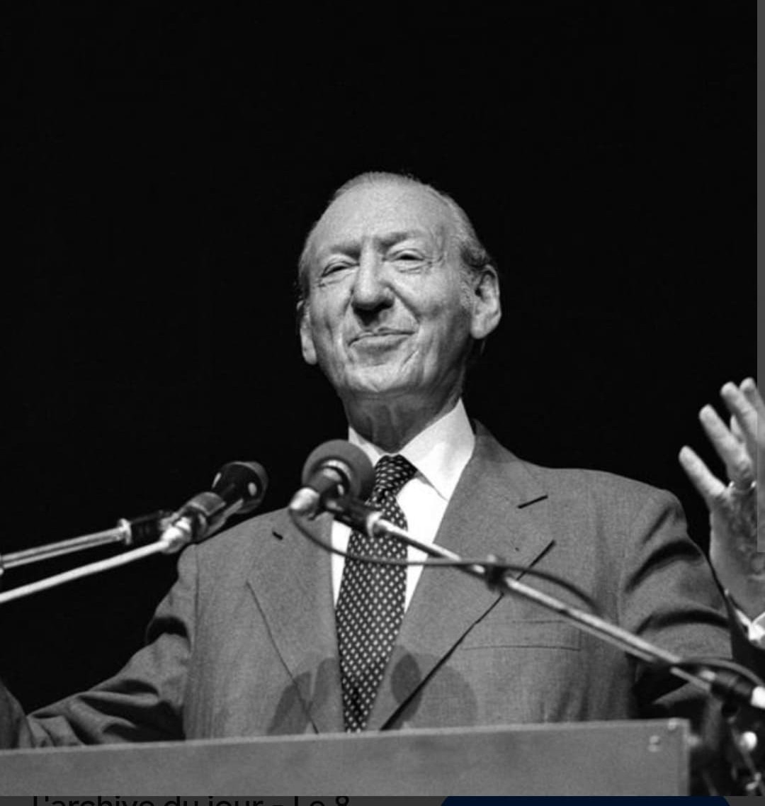
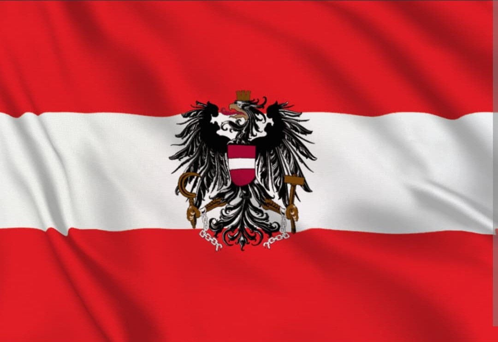

Un ancien officier nazi à la tête de l’ONU
affaire Waldhein
Introduction

L’affaire Waldheim est l’un des scandales les plus marquants de l’après‑guerre.
Kurt Waldheim (1918–2007), ancien officier de la Wehrmacht, parvient à devenir
Secrétaire général de l’ONU puis Président de l’Autriche, tout en dissimulant
pendant quarante ans son rôle réel durant la Seconde Guerre mondiale.
Lorsque la vérité éclate en 1986, le monde découvre qu’un homme ayant servi dans des unités
impliquées dans des crimes de guerre a dirigé l’organisation censée défendre la paix et les droits humains.
Service dans la Wehrmacht

Durant la guerre, Waldheim sert comme officier de renseignement dans les Balkans :
Grèce, Yougoslavie, Bosnie. Ces zones sont le théâtre de déportations, d’exécutions et d’opérations
anti‑partisans menées par l’armée allemande.
Aucun document ne prouve qu’il ait personnellement commis des crimes, mais il évolue au cœur
d’unités directement impliquées dans des actions criminelles. Il rédige des rapports, transmet
des ordres et participe administrativement aux opérations militaires.
Un passé dissimulé pendant 40 ans
Après 1945, Waldheim entame une carrière diplomatique. Pour se protéger, il
efface plusieurs années de son CV, supprime des affectations militaires et minimise son rôle.
Pendant des décennies, son passé réel reste inconnu du grand public.
Ses biographies officielles sont volontairement incomplètes, et il nie toute implication
dans les opérations menées par son unité.
Un ancien officier nazi à la tête de l’ONU

En 1972, Waldheim devient Secrétaire général de l’Organisation des Nations Unies.
Il occupe ce poste jusqu’en 1981. Le monde ignore alors son passé militaire réel.
Le contraste est immense : un ancien officier de la Wehrmacht dirige l’institution
créée pour empêcher le retour des crimes nazis.
1986 : le scandale éclate

Lors de sa campagne présidentielle, des historiens et le Congrès juif mondial révèlent
des documents prouvant sa présence sur des lieux de crimes de guerre.
Waldheim est accusé d’avoir menti pendant quarante ans.
Les États‑Unis le placent sur une liste noire : Waldheim est interdit d’entrée sur leur territoire.
Israël le déclare persona non grata.
La commission internationale d’historiens

En 1987, une commission internationale conclut :
- Aucune preuve qu’il ait commis des crimes.
- Mais il ne pouvait ignorer les crimes commis par son unité.
- Ses fonctions ont facilité les opérations de l’armée allemande.
Un président isolé

Malgré le scandale, Waldheim est élu Président de l’Autriche en 1986.
Son mandat est marqué par un isolement diplomatique total : aucun dirigeant occidental
ne souhaite apparaître à ses côtés.
Il ne sera jamais jugé, mais son nom reste associé à l’un des plus grands scandales
de mémoire de l’après‑guerre.
Un tournant pour la mémoire autrichienne

L’affaire Waldheim oblige l’Autriche à reconnaître sa participation au régime nazi,
brisant le mythe du pays présenté comme “première victime d’Hitler”.
Elle devient un symbole des zones grises de l’après‑guerre :
des responsables ayant pu poursuivre des carrières prestigieuses sans jamais être jugés.